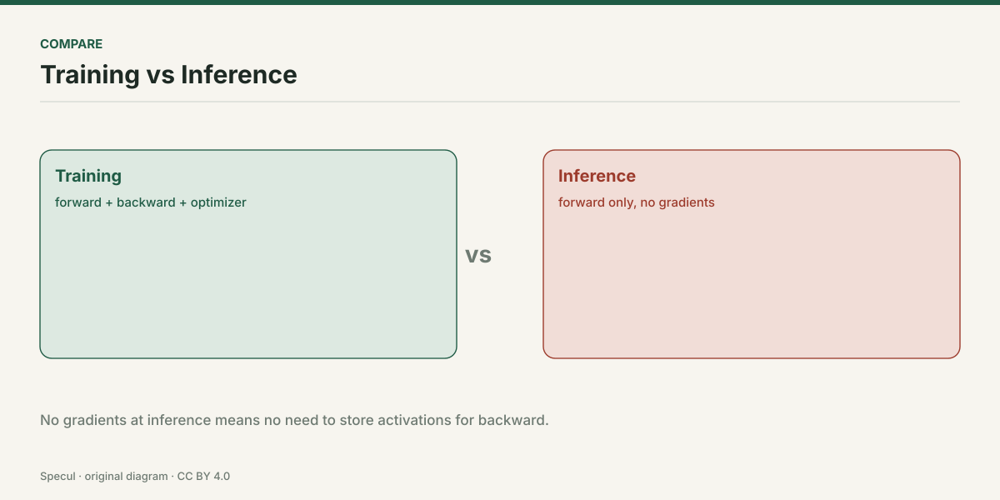

推理Inference
Inference
训练完之后，真正拿来回答你问题的过程。The model you trained is now answering real queries — a different phase with different costs.
用一个已经训练好的模型做计算、产出结果的过程。
和训练相反：训练需要大量算力，推理是持续的小规模计算。
Running a trained model to produce an answer. Often confused with "reasoning", but inference simply means using the model.

你每次和模型对话、每次它在本地生成内容，用的都是推理。算速度和成本时说的也是它。Training and inference have different cost structures. It explains why a model can be cheap to make and expensive to serve.
本地推理的速度受什么影响What affects local inference speed ↗
回到名词地图看第1段的其他 35 个词 →Back to the map: the other 35 terms in stage 1 →
- 本地推理的速度受什么影响What affects local inference speed ↗
别停在定义：去任务手册看按什么顺序做、验收什么；或者按你手头的任务，筛 3 个工具候选。Don’t stop at the definition: use the task handbook for the order and checks, or filter three tool candidates for the job at hand.
任务手册 →Task handbooks → · 按任务筛 3 个候选 →Filter three candidates →